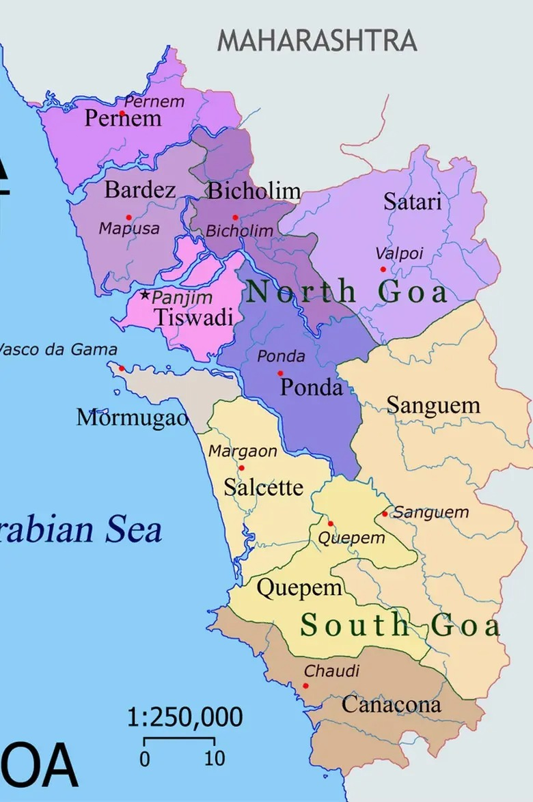

| Name: | Maharashtra |
|---|---|
| Capital: | Mumbai |
| Language: | Marathi |
| Chief Minister: | Eknath Shinde |
| Total Districts: | 36 |
| Population: | ~112 million (as per 2011 census) |
| Formation: | 1 May 1960 |
| Area: | 307,713 km² (3rd largest in India) |
| Borders: | Madhya Pradesh, Chhattisgarh, Telangana, Karnataka, Goa, Gujarat, Arabian Sea |
| Coastline: | ~720 km along the Arabian Sea |
Know more